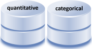

7 Data basics
This tutorial is an introduction to data preparation using the tidyverse (and other packages) for importing data, exploring data, and tidying data. Our goal is to transform, reshape, and join data frames to obtain the form we need for analysis and graphs.
We do the work in a reproducible form, by
- prescribing the file organization and file-naming scheme
- avoiding manual operations
- using explicit links and relative file paths
If the prerequisites have been met, the tutorial should take no longer than 50 minutes.
7.1 Prerequisites
Every tutorial assumes that
- You completed the Getting started instructions
- You launched
midfield_institute.Rprojto start the R session
Use File > New File > R Script to create a new R script
- Name the script
03-data-basics.R
- Save it in the
scriptsdirectory - Add a minimal header at the top of the script (if you wish)
- Use
library()to load the packages we will use
# workshop data basics
# name
# date
library("tidyverse")
library("lubridate")
library("seplyr")
library("rio")
library("inspectdf")Run the script by clicking the Source button. If you see an error like this one,
Error in library("pkg_name") : there is no package called 'pkg_name'then you should install the missing package(s) and run the script again.
[To review how to install an R package]
Guidelines
- As you work through the tutorial, type a line or chunk of code then File > Save and Source.
- Confirm that your result matches the tutorial result.
- Your turn exercises give you chance to devise your own examples and check them out. You learn by doing (but you knew that already)!
We begin by reviewing the practice datasets available in R and functions for exploring data.
7.2 Data sets in R
Practice data sets are included with the basic R installation and with some R packages.
To list the practice data sets available in R, type in the Console,
# type in the Console
data() which yields
#> AirPassengers Monthly Airline Passenger Numbers
#> BJsales Sales Data with Leading Indicator
#> BOD Biochemical Oxygen Demand
#> CO2 Carbon Dioxide Uptake in Grass Plants
#> Formaldehyde Determination of Formaldehyde
etc.We use the data() function to list practice datasets included in a package (if any). For example, to determine what packages are bundled with the dplyr package, type in the Console,
# type in the Console
data(package = "dplyr") yields
#> band_instruments Band membership
#> band_instruments2 Band membership
#> band_members Band membership
#> nasa NASA spatio-temporal data
#> starwars Starwars characters
#> storms Storm tracks dataEvery data set in base R and in R packages has a help page that describes the data format and variable names. The data help page can be accessed using help(), for example,
# type in the Console
help(starwars, package = "dplyr")Alternatively, if the package is loaded, you may run the ? item-name syntax in the Console,
# type in the Console
library("dplyr")
? starwarsyields

Your turn. These exercises assume that you have successfully followed the instructions to install midfielddata and midfieldr.
- Determine the names of the datasets available in the midfieldr package.
- Determine the variables in
case_stickiness(one of the datasets in the midfieldr package).
- Determine the names of the datasets available in the midfielddata package.
- Determine the variables in
midfielddegrees(one of the datasets in the midfielddata package).
7.3 Data structure
When we first encounter any data set, the first step is to characterize its structure including,
- the R data structure, e.g., vector, matrix, data frame, time series, list, etc.
- the number of observations
- the number of variables
- the name and class of each variable
To do so, we use functions like glimpse() and class() (introduced in R basics) as well as functions from the inspectdf package (introduced in the next section).
[To read more about R data structures]
[To read more about inspectdf]
7.4 Example: Create a 2018 price index
Over any time period with inflation, a dollar buys less at the end the period than it did at the beginning of the period. Thus, in 1973 a single 20-year old could live comfortably on $5/hour but in 2018 (45 years later) a 20-year-old has to earn $30/hour to achieve the same modest standard of living.
We usually adjust for the effects of inflation in US dollars using the Consumer Price Index (CPI) published by the US Bureau of Labor Statistics (BLS). The CPI is available by month from the BLS or from the Federal Reserve (FRED), from 1913 to the present.
In this example, we obtain historical Consumer Price Index data from the Federal Reserve (FRED) and perform the necessary data carpentry to graph a price index with respect to 2018 dollars.
| Step 1. Importing data |
The FRED provides CPI data from 1913 to the present as a .txt file at the URL:
http://research.stlouisfed.org/fred2/data/CPIAUCNS.txt
If you click on the link, you can see that the first 13 lines are metadata. The data starts on line 14 with the column names. I’ve added line numbers to make it easier to see.
1 Title: Consumer Price Index for All Urban Consumers: All Items
2 Series ID: CPIAUCNS
3 Source: U.S. Bureau of Labor Statistics
4 Release: Consumer Price Index
5 Seasonal Adjustment: Not Seasonally Adjusted
6 Frequency: Monthly
7 Units: Index 1982-1984=100
8 Date Range: 1913-01-01 to 2019-04-01
9 Last Updated: 2019-05-10 7:42 AM CDT
10 Notes: Handbook of Methods - (https://www.bls.gov/opub/hom/pdf/cpihom.pdf)
11 Understanding the CPI: Frequently Asked Questions -
12 (https://www.bls.gov/cpi/questions-and-answers.htm)
13
14 DATE VALUE
15 1913-01-01 9.800
16 1913-02-01 9.800
etc.
Assign the URL (add these lines to your script and run)
url <- "http://research.stlouisfed.org/fred2/data/CPIAUCNS.txt"Use rio::import() to download the data, skipping the first 13 lines
x <- rio::import(url, skip = 13)Use rio::export() to convert the txt file to CSV and write to our data directory
rio::export(x, "data/cpi-raw.csv")Once you have saved raw data to file (like we did above), leave that file unaltered. Never manipulate raw data manually.
In this workshop, we are saving all data files to the data directory. In larger projects, one might add a data-raw directory to separate raw data files from prepared data files.
We don’t have to re-import the data from the Internet every time we Source this R script, so we can comment-out the previous three lines of code with a hashtag, i.e.,
# url <- "http://research.stlouisfed.org/fred2/data/CPIAUCNS.txt"
# x <- rio::import(url, skip = 13)
# rio::export(x, "data/cpi-raw.csv")|  | Step 2. Exploring data |
Use rio::import() to read the raw data into the R workspace.
cpi <- rio::import("data/cpi-raw.csv")Use class() to determine the R data structure—in this case, cpi is a tibble (a type of data frame).
class(cpi)
#> [1] "data.frame"Use glimpse() to examine the tibble—we discover the number of observations (1276), the number of variables (2), their names (DATE, VALUE), and their class or type (character, double).
glimpse(cpi)
#> Observations: 1,276
#> Variables: 2
#> $ DATE <chr> "1913-01-01", "1913-02-01", "1913-03-01", "1913-04-01", ...
#> $ VALUE <dbl> 9.8, 9.8, 9.8, 9.8, 9.7, 9.8, 9.9, 9.9, 10.0, 10.0, 10.1...The first DATE values suggest these are monthly data, which agrees with the frequency given in the block of metadata. The VALUE variable is the CPI by month indexed at 1982–1984 (for which CPI = 100).
These data are in what Hadley Wickham calls “tidy” form, that is,
- Each variable is in a column
- Each observation is a row
- Each value is a cell
Such an organization is also called a “data matrix” or a “de-normalized form” (Mount, 2019). This form is typically the desired form for data visualization using the ggplot2 package, though other forms are sometimes useful.
Functions from the inspectdf package can tell us more about the data. First, we summarize memory usage. Here, both variable use negligible memory.
inspect_mem(cpi) # memory
#> # A tibble: 2 x 3
#> col_name size pcnt
#> <chr> <chr> <dbl>
#> 1 DATE 89.77 Kb 90.0
#> 2 VALUE 10.02 Kb 10.0Summarize the rate of missingness. Here, there are no missing values.
inspect_na(cpi) # NAs
#> # A tibble: 2 x 3
#> col_name cnt pcnt
#> <chr> <dbl> <dbl>
#> 1 DATE 0 0
#> 2 VALUE 0 0Summary
- 1276 observations, one per month, 1913-01 to 2019-04
- 1 categorical variable
DATE - 1 quantitative variable
VALUE(the CPI)
Your turn. For the
midfielddegreesdataset from the midfielddata package, determine
- the R data structure, e.g., vector, matrix, time series, data frame, tibble, etc.
- the number of observations
- the number of variables
- the name and class of each variable
- summary of missing values
- summary of missing values
Check your work: A tibble with 97640 observations and 5 variables. The variable that requires the most memory is
idwith 6.7 Mb. Three of the variables have 51% missing values.
 |
Step 3. Tidying data. |
For the application I have in mind, I want to convert monthly CPI to annual CPI.
I start by changing the variable names (the column names) because I prefer lowercase names and I prefer meaningful file names (cpi instead of VALUE).
Use dplyr::rename(new_name = old_name) to rename the variables.
cpi <- cpi %>%
dplyr::rename(date = DATE, cpi = VALUE) %>%
glimpse()
#> Observations: 1,276
#> Variables: 2
#> $ date <chr> "1913-01-01", "1913-02-01", "1913-03-01", "1913-04-01", "...
#> $ cpi <dbl> 9.8, 9.8, 9.8, 9.8, 9.7, 9.8, 9.9, 9.9, 10.0, 10.0, 10.1,...Before I can average the monthly CPIs by year, I need to extract the 4-digit year from the date variable.
Use lubridate::year() to extract the year from the date and mutate() to create the new year variable.
cpi <- cpi %>%
mutate(year = lubridate::year(date)) %>%
glimpse()
#> Observations: 1,276
#> Variables: 3
#> $ date <chr> "1913-01-01", "1913-02-01", "1913-03-01", "1913-04-01", "...
#> $ cpi <dbl> 9.8, 9.8, 9.8, 9.8, 9.7, 9.8, 9.9, 9.9, 10.0, 10.0, 10.1,...
#> $ year <dbl> 1913, 1913, 1913, 1913, 1913, 1913, 1913, 1913, 1913, 191...Use filter() to omit 2019 data because we do not have a full year. Note the reduction in the number of observations.
cpi <- cpi %>%
filter(year != 2019) %>%
glimpse()
#> Observations: 1,272
#> Variables: 3
#> $ date <chr> "1913-01-01", "1913-02-01", "1913-03-01", "1913-04-01", "...
#> $ cpi <dbl> 9.8, 9.8, 9.8, 9.8, 9.7, 9.8, 9.9, 9.9, 10.0, 10.0, 10.1,...
#> $ year <dbl> 1913, 1913, 1913, 1913, 1913, 1913, 1913, 1913, 1913, 191...Use arrange() and tail() to confirm that 2018 is the final year.
cpi %>% arrange(date) %>% tail()
#> date cpi year
#> 1267 2018-07-01 252.006 2018
#> 1268 2018-08-01 252.146 2018
#> 1269 2018-09-01 252.439 2018
#> 1270 2018-10-01 252.885 2018
#> 1271 2018-11-01 252.038 2018
#> 1272 2018-12-01 251.233 2018Use seplyr::group_summarize() operation to determine the average annual CPI.
grouping_variables <- c("year")
cpi_1984_basis <- seplyr::group_summarize(cpi,
grouping_variables,
cpi = mean(cpi)) %>%
glimpse()
#> Observations: 106
#> Variables: 2
#> $ year <dbl> 1913, 1914, 1915, 1916, 1917, 1918, 1919, 1920, 1921, 192...
#> $ cpi <dbl> 9.883333, 10.016667, 10.108333, 10.883333, 12.825000, 15....We have an excess of significant digits. Use round() to reduce our annual CPI values to 2 digits.
cpi_1984_basis <- cpi_1984_basis %>%
mutate(cpi = round(cpi, 2)) %>%
glimpse()
#> Observations: 106
#> Variables: 2
#> $ year <dbl> 1913, 1914, 1915, 1916, 1917, 1918, 1919, 1920, 1921, 192...
#> $ cpi <dbl> 9.88, 10.02, 10.11, 10.88, 12.82, 15.04, 17.33, 20.04, 17...These values can be displayed,
ggplot(data = cpi_1984_basis, mapping = aes(x = year, y = cpi)) +
geom_line() +
labs(title = "CPI with a 1983--1984 basis")As expected, in 1983–1984 (the basis years), CPI = 100. To shift the basis year to 2018, we extract the CPI for 2018,
cpi_2018 <- cpi_1984_basis %>%
filter(year == 2018) %>%
select(cpi) %>%
unlist(use.names = FALSE)
cpi_2018
#> [1] 251.11Then divide all CPI values by the 2018 value to create the price index with a 2018 basis. In the basis year, the index = 1.
cpi_2018_basis <- cpi_1984_basis %>%
mutate(index = cpi / cpi_2018) %>%
glimpse()
#> Observations: 106
#> Variables: 3
#> $ year <dbl> 1913, 1914, 1915, 1916, 1917, 1918, 1919, 1920, 1921, 19...
#> $ cpi <dbl> 9.88, 10.02, 10.11, 10.88, 12.82, 15.04, 17.33, 20.04, 1...
#> $ index <dbl> 0.03934531, 0.03990283, 0.04026124, 0.04332763, 0.051053...Graph the price index,
ggplot(data = cpi_2018_basis, mapping = aes(x = year, y = index)) +
geom_line() +
labs(title = "Price index with a 2018 basis")The price index is used to account for inflation for any US dollar amount from 1913 to 2018 and report the results in terms of constant 2018 dollars. One simply divides the nominal dollar value by the price index for that year.
Now that the data are prepared, we write them to file.
rio::export(cpi_2018_basis, "data/cpi.csv")7.5 Example: Normalized housing costs
In this example we retrieve nominal US housing costs from the OECD database.
| Step 1. Importing data |
The long URL string below retrieves US housing costs by year from the OECD database. These are nominal costs (not adjusted for inflation) and normalized to a basis year of 2015, that is, the median house price is 100 in 2015.
We start by importing the data and writing it to file.
url <- "https://stats.oecd.org/sdmx-json/data/DP_LIVE/USA.HOUSECOST.NOMINAL.IDX2015.A/OECD?contentType=csv&detail=code&separator=comma&csv-lang=en&startPeriod=1956&endPeriod=2018"
x <- rio::import(url, format = "csv")
rio::export(x, "data/housing-raw.csv")Again, after doing this once, we can comment-out these three lines of code so we don’t have to access the internet every time we Source this script.
# url <- "https://stats.oecd.org/sdmx-json/data/DP_LIVE/USA.HOUSECOST.NOMINAL.IDX2015.A/OECD?contentType=csv&detail=code&separator=comma&csv-lang=en&startPeriod=1956&endPeriod=2018"
# x <- rio::import(url, format = "csv")
# rio::export(x, "data/housing-raw.csv")| Step 2. Exploring data |
Read in the CSV file and examine it. Here, we have 49 observations of 8 variables in tidy form.
housing <- rio::import("data/housing-raw.csv") %>%
glimpse()
#> Observations: 49
#> Variables: 8
#> $ LOCATION <chr> "USA", "USA", "USA", "USA", "USA", "USA", "USA", ...
#> $ INDICATOR <chr> "HOUSECOST", "HOUSECOST", "HOUSECOST", "HOUSECOST...
#> $ SUBJECT <chr> "NOMINAL", "NOMINAL", "NOMINAL", "NOMINAL", "NOMI...
#> $ MEASURE <chr> "IDX2015", "IDX2015", "IDX2015", "IDX2015", "IDX2...
#> $ FREQUENCY <chr> "A", "A", "A", "A", "A", "A", "A", "A", "A", "A",...
#> $ TIME <int> 1970, 1971, 1972, 1973, 1974, 1975, 1976, 1977, 1...
#> $ Value <dbl> 11.16166, 12.06250, 12.92855, 14.46220, 15.78472,...
#> $ `Flag Codes` <lgl> NA, NA, NA, NA, NA, NA, NA, NA, NA, NA, NA, NA, N...We asked for data starting from 1956, but the US data in this database apparently starts in 1970, hence 49 observations, one per year, from 1970 to 2019.
We have two numerical variables for year and normalized housing value; of the remaining variables, one is logical and the rest are categorical.
We cam summarize the categorical variables using inspect_cat().
inspect_cat(housing)
#> # A tibble: 6 x 5
#> col_name cnt common common_pcnt levels
#> <chr> <int> <chr> <dbl> <list>
#> 1 Flag Codes 1 <NA> 100 <tibble [1 x 3]>
#> 2 FREQUENCY 1 A 100 <tibble [1 x 3]>
#> 3 INDICATOR 1 HOUSECOST 100 <tibble [1 x 3]>
#> 4 LOCATION 1 USA 100 <tibble [1 x 3]>
#> 5 MEASURE 1 IDX2015 100 <tibble [1 x 3]>
#> 6 SUBJECT 1 NOMINAL 100 <tibble [1 x 3]>Here, the count of the number of levels for every categorical variable is 1, e.g., indicator = house cost, location = US, etc, indicating that these variables have a constant value for all years.
Memory usage is small and there are no missing values.
inspect_mem(housing)
#> # A tibble: 8 x 3
#> col_name size pcnt
#> <chr> <chr> <dbl>
#> 1 INDICATOR 504 bytes 14.7
#> 2 LOCATION 496 bytes 14.5
#> 3 SUBJECT 496 bytes 14.5
#> 4 MEASURE 496 bytes 14.5
#> 5 FREQUENCY 496 bytes 14.5
#> 6 Value 440 bytes 12.9
#> 7 TIME 248 bytes 7.24
#> 8 Flag Codes 248 bytes 7.24
inspect_na(housing)
#> # A tibble: 8 x 3
#> col_name cnt pcnt
#> <chr> <dbl> <dbl>
#> 1 Flag Codes 49 100
#> 2 LOCATION 0 0
#> 3 INDICATOR 0 0
#> 4 SUBJECT 0 0
#> 5 MEASURE 0 0
#> 6 FREQUENCY 0 0
#> 7 TIME 0 0
#> 8 Value 0 0Summary
- 49 observations, one per year, 1970–2019
- 2 quantitative variables are of interest:
TIMEandValue - the remaining categorical and logical variables are not relevant to our inquiry
|
Step 3. Tidying data. |
We want to keep the TIME and Value columns and rename them.
housing_2015_basis <- housing %>%
select(TIME, Value) %>%
dplyr::rename(year = TIME, nominal = Value) %>%
glimpse()
#> Observations: 49
#> Variables: 2
#> $ year <int> 1970, 1971, 1972, 1973, 1974, 1975, 1976, 1977, 1978, ...
#> $ nominal <dbl> 11.16166, 12.06250, 12.92855, 14.46220, 15.78472, 16.7...The costs have been normalized with a 2015 basis, that is in 2015, the price is 100. I’d like to normalize these data to 2018 costs by dividing all nominal values by the one recorded for 2018, then multiply by 100, so that the $100 price value is in the same basis year as my price index.
First, find the 2018 nominal house cost.
nominal_2018 <- housing_2015_basis %>%
filter(year == 2018) %>%
select(nominal) %>%
unlist(use.names = FALSE)
nominal_2018
#> [1] 120.3783Then adjust the costs so that the basis year is 2018.
housing_2018_basis <- housing_2015_basis %>%
mutate(nominal = nominal / nominal_2018 * 100)Check the tail of the data frame to confirm that the 2018 value is 100.
tail(housing_2018_basis, n = 10L)
#> year nominal
#> 40 2009 73.30078
#> 41 2010 71.12164
#> 42 2011 68.12677
#> 43 2012 70.10484
#> 44 2013 75.07875
#> 45 2014 78.88267
#> 46 2015 83.07147
#> 47 2016 88.01283
#> 48 2017 93.81684
#> 49 2018 100.00000We can graph this for a look at relative nominal housing costs in the US.
ggplot(data = housing_2018_basis, mapping = aes(x = year, y = nominal)) +
geom_line() +
labs(title = "Normalized US median housing cost",
subtitle = "Not adjusted for inflation")
Now that the data are prepared, we write them to file.
rio::export(housing_2018_basis, "data/housing.csv")7.6 Example: Real US housing costs
In this final example, we join the two data frames we created previously and adjust the US housing costs for inflation. The raw data have already been prepared, so we can continue step 3.
|
Step 3. Tidying data. |
Read in the two data frames we saved earlier. Recall that both have been transformed to use a 2018 basis.
cpi <- rio::import("data/cpi.csv")
housing <- rio::import("data/housing.csv")The CPI data spans 1913 to 2018, with the index = 1 in 2018.
head(cpi)
#> year cpi index
#> 1 1913 9.88 0.03934531
#> 2 1914 10.02 0.03990283
#> 3 1915 10.11 0.04026124
#> 4 1916 10.88 0.04332763
#> 5 1917 12.82 0.05105332
#> 6 1918 15.04 0.05989407
tail(cpi)
#> year cpi index
#> 101 2013 232.96 0.9277209
#> 102 2014 236.74 0.9427741
#> 103 2015 237.02 0.9438891
#> 104 2016 240.01 0.9557963
#> 105 2017 245.12 0.9761459
#> 106 2018 251.11 1.0000000The housing data spans 1970 to 2018, with nominal cost = 100 in 2018.
head(housing)
#> year nominal
#> 1 1970 9.272153
#> 2 1971 10.020497
#> 3 1972 10.739936
#> 4 1973 12.013966
#> 5 1974 13.112603
#> 6 1975 13.930902
tail(housing)
#> year nominal
#> 44 2013 75.07875
#> 45 2014 78.88267
#> 46 2015 83.07147
#> 47 2016 88.01283
#> 48 2017 93.81684
#> 49 2018 100.00000Use left_join() to combine the two data frames, joining cpi to housing
housing_cpi <- left_join(housing, cpi, by = "year")
head(housing_cpi)
#> year nominal cpi index
#> 1 1970 9.272153 38.83 0.1546334
#> 2 1971 10.020497 40.49 0.1612441
#> 3 1972 10.739936 41.82 0.1665406
#> 4 1973 12.013966 44.40 0.1768149
#> 5 1974 13.112603 49.31 0.1963681
#> 6 1975 13.930902 53.82 0.2143284
tail(housing_cpi)
#> year nominal cpi index
#> 44 2013 75.07875 232.96 0.9277209
#> 45 2014 78.88267 236.74 0.9427741
#> 46 2015 83.07147 237.02 0.9438891
#> 47 2016 88.01283 240.01 0.9557963
#> 48 2017 93.81684 245.12 0.9761459
#> 49 2018 100.00000 251.11 1.0000000Usage: left_join(x, y, by) returns all rows from x and all columns from x and y. ‘by’ is a character vector of variables (column names) that x and y have in common used to join the two data frames.
In this case, we left-join cpi (y) to housing (x) because housing has fewer years. Had we reversed the order of the two data frames, rows in x with no match in y will have NA values in the new columns, i.e.,
test <- left_join(cpi, housing, by = "year")
head(test)
#> year cpi index nominal
#> 1 1913 9.88 0.03934531 NA
#> 2 1914 10.02 0.03990283 NA
#> 3 1915 10.11 0.04026124 NA
#> 4 1916 10.88 0.04332763 NA
#> 5 1917 12.82 0.05105332 NA
#> 6 1918 15.04 0.05989407 NA
tail(test)
#> year cpi index nominal
#> 101 2013 232.96 0.9277209 75.07875
#> 102 2014 236.74 0.9427741 78.88267
#> 103 2015 237.02 0.9438891 83.07147
#> 104 2016 240.01 0.9557963 88.01283
#> 105 2017 245.12 0.9761459 93.81684
#> 106 2018 251.11 1.0000000 100.00000The real housing cost is determined by dividing the nominal cost by the price index,
housing_cpi <- housing_cpi %>%
mutate(real = nominal / index)
head(housing_cpi)
#> year nominal cpi index real
#> 1 1970 9.272153 38.83 0.1546334 59.96215
#> 2 1971 10.020497 40.49 0.1612441 62.14490
#> 3 1972 10.739936 41.82 0.1665406 64.48841
#> 4 1973 12.013966 44.40 0.1768149 67.94656
#> 5 1974 13.112603 49.31 0.1963681 66.77562
#> 6 1975 13.930902 53.82 0.2143284 64.99793
tail(housing_cpi)
#> year nominal cpi index real
#> 44 2013 75.07875 232.96 0.9277209 80.92816
#> 45 2014 78.88267 236.74 0.9427741 83.67080
#> 46 2015 83.07147 237.02 0.9438891 88.00978
#> 47 2016 88.01283 240.01 0.9557963 92.08325
#> 48 2017 93.81684 245.12 0.9761459 96.10944
#> 49 2018 100.00000 251.11 1.0000000 100.00000Graphing normalized median US housing costs in real (constant 2018) dollars, we have,
ggplot(data = housing_cpi, mapping = aes(x = year, y = real)) +
geom_line() +
labs(title = "Normalized US median housing cost",
subtitle = "Constant 2018 dollars")From the graph, a monthly housing cost of $100 in 2018 is equivalent to approximately $70 in 1995 and $60 in 1970, for the same level of housing in constant 2018 dollars. Inflation has been accounted for, so the rises and falls we see in the graph represents changes in the real cost of housing.
The ratios hold for any amount, so a monthly housing cost of $1000 in 2018 is equivalent to approximately $700 in 1995 and $600 in 1970—again, in constant 2018 dollars.
In summary, we have used the OECD housing index to account for the fluctuations in house prices and we have used the CPI to account for inflation.
7.7 Summary of functions introduced
Summary of the data preparation functions used in this tutorial, organized by package.
dplyr
arrange()order the rows of data frame
filter()choose rows of a data frame that meet a condition, and omit all othersmutate()add new variables (columns) to a data frame
select()choose variables (columns) of a data frame and omit all othersrename()rename selected variables (columns) of a data frame and keep all others
left_join()combine two data frames by variables they have in common
rio
import()read a data frame by URL or filenameexport()write a data frame as a specified type of file
inspectdf
inspect_mem()summarize memory usage of a data frame
inspect_na()summarize the rate of missingness of variables in a data frame
inspect_ cat()summarize the levels within each categorical variable in a data frame
lubridate
year()return the year as a number from a date object
seplyr
group_summarize()perform summary operations on groups defined by selected variables
base R